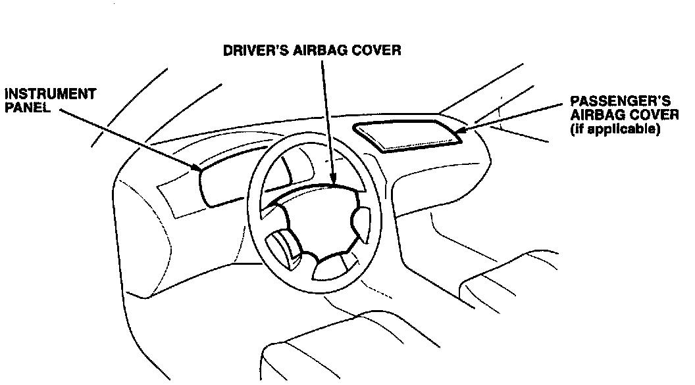

Owner Letter
February 1997Supplemental Restraint System Inspection
Dear Acura Owner:
The maintenance schedule in the Owner's Manual requires that vehicles with a Supplemental Restraint System (SRS) have the SRS inspected 10 years after the date of manufacture. The manufacture date of your vehicle can be found on the certification label attached to the driver's doorjamb. The inspection procedure is very simple; you can do it yourself. If the system should have a problem, you should, for your own safety, have the system repaired by an authorized Acura dealer. Cost for repairs to the SRS system on vehicles out of warranty are the responsibility of the owner.
INSPECTION PROCEDURE
1. Turn the ignition switch to the ON (II) position.
2. Check that the SRS light on the instrument panel comes on for approximately 6 seconds and then goes off. If the SRS light stays on or does not come on, you need to contact an authorized Acura dealer for repairs.

3. Visually inspect the external vinyl cover(s) over the SRS airbag(s) for damage or deterioration. If the airbag cover(s) are damaged or deteriorated, you should have the airbag(s) replaced by an authorized Acura dealer.
4. Place this letter in the glove box so that it will remain with the vehicle when it is sold.